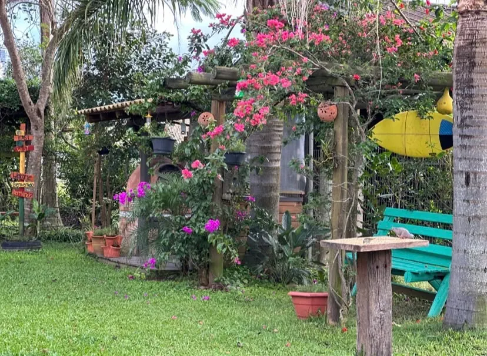

a casa
Um quintal com quatro portas e o mar logo ali.
O Sommer Lodge fica em Garopaba, no sul de Santa Catarina, a cem metros da Surfland — a piscina de ondas. São quatro suítes independentes, cada uma com porta própria para o jardim: você entra e sai sem passar por recepção, corredor ou ninguém.
As suítes levam nome de praias da Nova Zelândia, e cada quarto tem uma telinha pintada à mão da praia que deu o nome. Haumoana, em māori, quer dizer brisa do mar.
